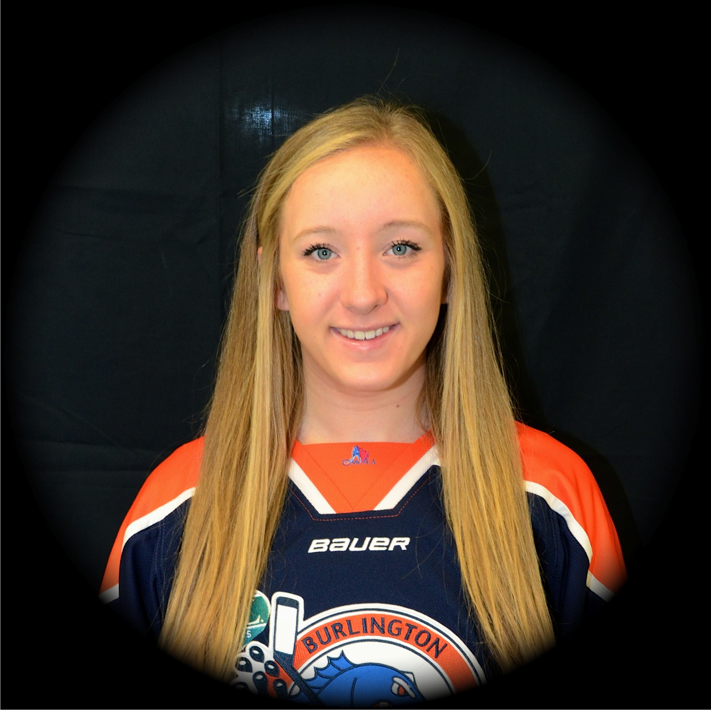

A little about Sydney
The original profile reflects Sydney's goals and experiences as a student-athlete in 2015.

Player details at the time
The original bio describes a player who enjoyed playing all forward positions and valued speed, forechecking, backchecking and a strong two-way game.
Dedication beyond the rink
Sydney began playing hockey at age six. She also trained extensively in gymnastics and competed at the Canadian National Championships, where the original bio records a second-place finish on bars and sixth overall. In 2011, she returned her focus to competitive girls' hockey.
She described those experiences as lessons in hard work, commitment and setting a goal and pursuing it.
This page preserves historical biographical information from the original site. Personal measurements and dates have not been repeated in this redesigned version.